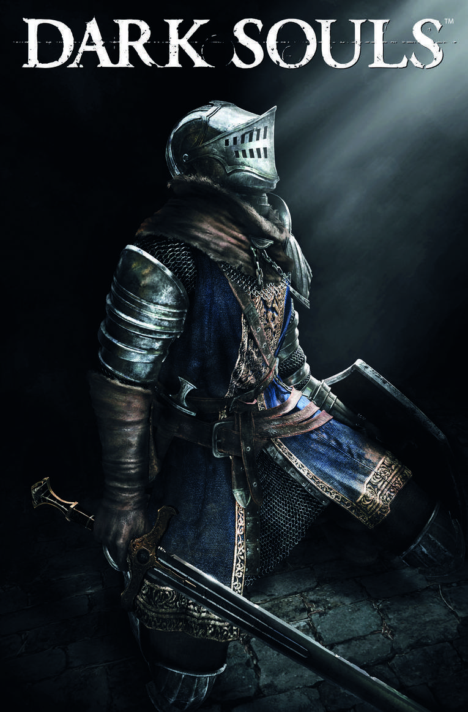

Dark Souls 1 (2011)

A história de Lordran começa muito antes da jornada do Morto-Vivo Escolhido. A ascensão dos deuses, a maldição dos mortos-vivos e a busca pela Primeira Chama são partes de uma mesma tentativa de adiar o fim de uma era.
1. A Era dos Antigos
Antes da Primeira Chama, o mundo era tomado por uma névoa cinzenta e por árvores ancestrais. Os Dragões Eternos dominavam esse cenário: suas escamas de pedra os tornavam quase imutáveis, e a ausência de mudanças mantinha o mundo em um estado sem distinções claras entre vida e morte, calor e frio, luz e escuridão.
Então, em algum lugar sob as raízes do mundo, surgiu a Primeira Chama. Com ela vieram diferenças e movimento. Seres encontraram almas junto ao fogo e passaram a carregar poderes capazes de transformar o mundo. Gwyn tomou a Alma da Luz, Nito encontrou a primeira alma da morte, a Bruxa de Izalith recebeu uma grande alma ligada à vida e ao fogo, e o Pigmeu Furtivo encontrou a Alma Negra — origem da humanidade, dividida entre incontáveis seres.
Com a ajuda de Seath, o Sem-Escamas, que traiu os seus, Gwyn e seus aliados guerrearam contra os Dragões Eternos. A tempestade de relâmpagos de Gwyn rompeu as escamas de pedra; Nito espalhou doença e morte, enquanto a Bruxa e seus seguidores empregaram o fogo. Após a queda dos dragões, começou a Era do Fogo, e os vencedores estabeleceram seus domínios sobre o mundo.
2. Gwyn e a Era do Fogo
Gwyn construiu seu poder em torno de Anor Londo, uma cidade de deuses marcada por muralhas, salões e pela luz do sol. Seus filhos e aliados ocuparam posições importantes, e os deuses passaram a representar a ordem da Era do Fogo. A influência de Gwyn se estendeu muito além de sua cidade, alcançando reis, cavaleiros e reinos humanos.
Mas a Primeira Chama começou a enfraquecer. O fogo que sustentava aquela era não poderia permanecer aceso para sempre, e a escuridão associada à humanidade passou a ser vista com medo. Para prolongar seu domínio, Gwyn partiu até o Kiln of the First Flame e ofereceu a própria alma ao fogo. Ele se tornou o primeiro Lorde das Cinzas, mas seu sacrifício apenas adiou a mudança: a chama continuaria a diminuir e a pedir novos sacrifícios.
3. A maldição dos mortos-vivos
À medida que a chama enfraquece, humanos começam a carregar o Darksign, uma marca associada à maldição dos mortos-vivos. Quem a possui pode morrer e retornar, mas cada morte ameaça consumir sua humanidade. A maldição não oferece uma vida sem consequências: ela prende seus portadores a um ciclo de retornos e perdas.
Quando um morto-vivo perde por completo o propósito e a razão, torna-se Hollow — um ser vazio que já não conserva a identidade que tinha. Para conter a propagação da maldição, muitos são aprisionados e enviados ao Asilo dos Mortos-Vivos, longe dos reinos habitados. A origem exata do Darksign e sua ligação com a chama não é explicada de modo definitivo; a história sugere relações entre esses fenômenos, sem apresentar todas as respostas.
4. O Morto-Vivo Escolhido
O protagonista escapa do Asilo com a ajuda de Oscar de Astora, um cavaleiro ferido que lhe entrega a missão de tocar os Sinos do Despertar. Após chegar a Lordran, encontra em Firelink Shrine um refúgio cercado por caminhos para regiões muito diferentes. A jornada começa como uma busca por respostas, mas logo se transforma na travessia de um reino em ruínas.
Os dois sinos — um acima da Paróquia dos Mortos-Vivos e outro nas profundezas de Blighttown — despertam o caminho adiante. Sen's Fortress, uma fortaleza repleta de armadilhas, abre passagem até Anor Londo. Lá, o escolhido recebe o Lordvessel, capaz de romper o selo que protege o Kiln, mas para avançar precisa reunir almas poderosas.
O percurso leva às profundezas de New Londo, ao domínio de Nito, às ruínas de Izalith e ao arquivo de Seath. Cada alma obtida revela outro fragmento de uma era que tenta sobreviver. Assim, a missão anunciada no início — alcançar o fogo — aproxima o protagonista das mesmas decisões que definiram o destino de Gwyn.
5. Frampt e Kaathe
Kingseeker Frampt, uma das serpentes primordiais, apresenta a busca como uma missão sagrada: reunir as grandes almas e ligar a Primeira Chama, seguindo o caminho de Gwyn. Sua orientação conduz o escolhido ao Lordvessel e ao Kiln. A serpente acredita que prolongar a Era do Fogo é o destino adequado para o sucessor de Gwyn.
Darkstalker Kaathe oferece outra leitura. Ele associa o Pigmeu Furtivo e a Alma Negra ao futuro dos humanos e apresenta a possibilidade de abandonar a chama, em vez de alimentá-la novamente. As serpentes não são narradoras neutras, e o jogo não confirma uma delas como dona de toda a verdade. Ligar o fogo pode manter a era atual por mais tempo; deixá-lo morrer pode abrir espaço para a escuridão e para uma era da humanidade, embora a natureza desse futuro permaneça ambígua.
6. Grandes inimigos e o caminho até Gwyn
Nito e as grandes almas
Nito, o primeiro dos mortos, governa uma região subterrânea ligada à morte. Sua grande alma é uma das forças que o escolhido precisa reunir; seu domínio mostra como os poderes que venceram os dragões se fragmentaram e permaneceram presos ao passado.
Izalith e a Bed of Chaos
Quando tentou recriar a Primeira Chama para salvar sua era, a Bruxa de Izalith provocou uma transformação desastrosa. Ela e parte de suas filhas foram convertidas em criaturas demoníacas, e a Bed of Chaos passou a abrigar a Alma do Caos. O episódio ajuda a explicar a origem dos demônios e a ruína de Izalith.
Seath, o Sem-Escamas
Traidor dos Dragões Eternos e aliado de Gwyn, Seath recebeu reconhecimento e conduziu experimentos em busca de imortalidade. Sua obsessão por cristais e por conhecimento deixou marcas no reino. Para alcançar a grande alma que guarda, o escolhido precisa atravessar o arquivo e a caverna cristalina.
Oolacile, Artorias e Manus
Em Oolacile, habitantes despertaram Manus, pai do Abismo, e a escuridão tomou a região. Artorias tentou enfrentá-lo, mas foi vencido; a lenda posterior omite que o jogador é quem interrompe a expansão do Abismo. A ligação exata de Manus com a humanidade é interpretada a partir de fragmentos da história, não explicada por completo.
7. Gwyn, Lord of Cinder
Com as grandes almas reunidas, o escolhido atravessa o Kiln of the First Flame. No fim do caminho encontra Gwyn, já sem a majestade do antigo senhor de Anor Londo. O fogo consumiu quase tudo o que restava dele; o rei que sacrificou a própria alma tornou-se uma figura exausta, ainda agarrada ao lugar onde tentou preservar sua era.
A batalha final não é contra um soberano no auge do poder, mas contra o resultado de seu sacrifício. Gwyn se tornou Lord of Cinder ao alimentar a chama, e agora o escolhido ocupa o lugar de quem precisa decidir se repetirá esse gesto ou permitirá que a era termine.
8. Os finais
Final 1 — Link the Fire
Se o escolhido permanece no Kiln e oferece sua vida à Primeira Chama, o fogo se reacende e a Era do Fogo é prolongada. O protagonista segue o caminho de Gwyn e se torna mais um Lorde das Cinzas. O final não garante que a decadência tenha sido resolvida: o ciclo apenas ganha mais tempo.
Final 2 — The Dark Lord
Se o escolhido deixa o Kiln, a chama permanece sem novo sacrifício e ele é reconhecido pelas serpentes como Dark Lord. A escuridão avança, mas o destino da humanidade depois disso não é mostrado claramente. O jogo não define essa escolha como uma vitória simples nem como um desastre absoluto.
9. O significado de Dark Souls 1
Gwyn tentou impedir o fim da Era do Fogo e, ao fazê-lo, iniciou uma sucessão de sacrifícios que não elimina a decadência. O Morto-Vivo Escolhido pode repetir seu gesto ou recusá-lo, mas Lordran não oferece uma resposta definitiva sobre o que deve vir depois. Muito tempo mais tarde, outros reinos enfrentarão dilemas semelhantes — entre eles, Drangleic.
Classes iniciais
Guerreiro
Arma inicial: Espada Longa e Escudo Aquecedor
Armadura: Elmo Padrão e conjunto de Couro Resistente
Combatente versátil, com força e destreza equilibradas para usar diferentes armas corpo a corpo.
Cavaleiro
Arma inicial: Espada Larga e Escudo Torre
Armadura: Conjunto de Cavaleiro
Começa bem protegido e com muita resistência, mas é mais pesado e lento.
Andarilho
Arma inicial: Cimitarra e Escudo de Couro
Armadura: Conjunto de Andarilho
Ágil e habilidoso, favorece esquivas e ataques rápidos com armas leves.
Ladrão
Arma inicial: Faca de Bandido e Escudo Alvo
Armadura: Máscara de Ladrão e conjunto de Couro Negro
Especialista em destreza e golpes críticos; começa com a chave mestra.
Bandido
Arma inicial: Machado de Batalha e Escudo de Aranha
Armadura: Conjunto de Brigand (Salteador)
Forte e resistente, começa com um machado potente para combates próximos.
Caçador
Arma inicial: Espada Curta, Arco Curto e Escudo Grande de Couro
Armadura: Armadura, Luvas e Botas de Couro
Combina combate corpo a corpo com ataques à distância usando arco e flechas.
Feiticeiro
Arma inicial: Adaga, Escudo Pequeno de Couro e Catalisador de Feiticeiro
Armadura: Conjunto de Feiticeiro
Começa com inteligência elevada e feitiços para atacar inimigos de longe.
Piromante
Arma inicial: Machado de Mão, Escudo Redondo Rachado e Chama de Piromancia
Armadura: Capuz, Robe e Manchette de Pano Esfarrapado, com Botas Pesadas
Começa no nível 1 e usa piromancias, incluindo Bola de Fogo, junto de ataques físicos.
Clérigo
Arma inicial: Maça, Escudo Leste-Oeste e Talismã de Lona
Armadura: Robe Sagrada, Luvas de Viajante e Calças Sagradas
Começa com milagres de suporte e cura, além de uma arma contundente eficaz.
Desprovido
Arma inicial: Clava e Escudo de Tábuas
Armadura: Nenhuma
Começa no nível 6, com todos os atributos em 11 e quase nenhum equipamento.
Chefes mais dificeis do Dark Souls 1
| Chefe |
Local |
Tipo |
| Ornstein e Smough |
Anor Londo |
Dupla / Humanoides |
| Manus, Father of the Abyss |
Chasm of the Abyss |
Humanoide / Aberração |
| Knight Artorias |
Coliseum de Oolacile |
Humanoide / Cavaleiro |
| Black Dragon Kalameet |
Royal Wood / área de Oolacile |
Dragão |
← Voltar ao início